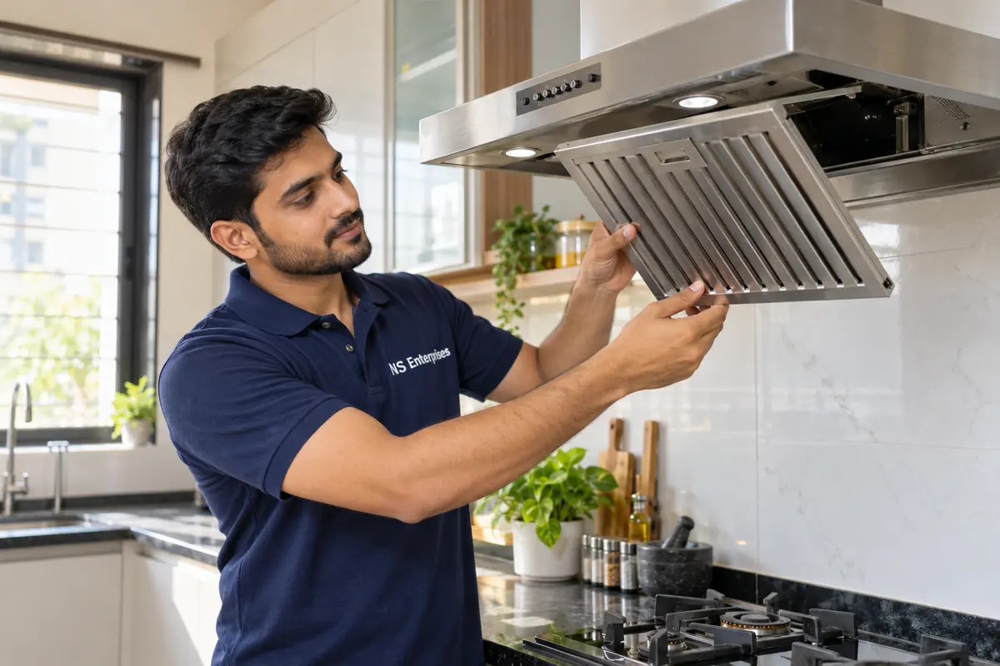

Chimney Repair
Low suction, oil leakage, noise, motor and auto-clean faults.
Book chimney repair, chimney cleaning, hob repair and microwave repair in Malkajgiri, ECIL, Kapra and AS Rao Nagar with a quote before work starts.

Choose your appliance to see common faults and how they are checked.
Low suction, oil leakage, noise, motor and auto-clean faults.
Filter wash, chemical wash and full deep cleaning.
Fitting, removal and shifting of kitchen chimneys.
Not heating, sparking, turntable and touch panel faults.
Auto ignition, weak flame, blocked burner and knob problems.
Not heating, error codes and auto shut-off problems.
Not draining, leakage and poor wash results.
Burner, ignition and oven heating problems.
Low flow, leakage, taste and power problems.
Details worth sharing, so the right check is planned.
Touch buttons that work only sometimes are often affected by moisture and oil. Wipe the panel dry with power off; if it repeats, the panel or board needs testing.
Send one photo of the filter and one of the oil cup. They show whether basic cleaning is enough or a chemical wash is more suitable.
Lights working while the fan stays off usually rules out a full power failure. Share that detail, as it narrows the check to the fan circuit.
For a flush-fitted hob, tell us the cut-out size and whether there is open space below it. It affects how the hob is lifted for repair.
If suction has dropped, first look at the filters and oil collector. Telling us whether they were cleaned recently helps decide between chimney cleaning and repair.
In an independent house, mention the floor and whether the duct opens on an outer wall, as that decides what access is needed.
Faber chimney service, Elica chimney cleaning and other brands can be requested here.
Tell us the appliance, the issue and your location. The visit charge is ₹350. Approve any repair or part only after you understand the quote.
Continue to the booking form to add your address. Today and the earliest slot are already selected.
You can book basic and deep cleaning. Share the model and a photo of the filters for a better estimate.
Yes, hob and gas stove requests are accepted in Malkajgiri. Never use a stove with a suspected gas leak.
You can request Faber chimney service and Elica chimney cleaning in ECIL, Kapra and AS Rao Nagar. Parts depend on the model.